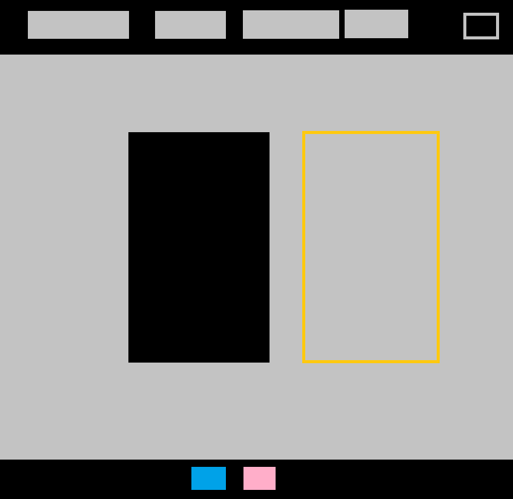
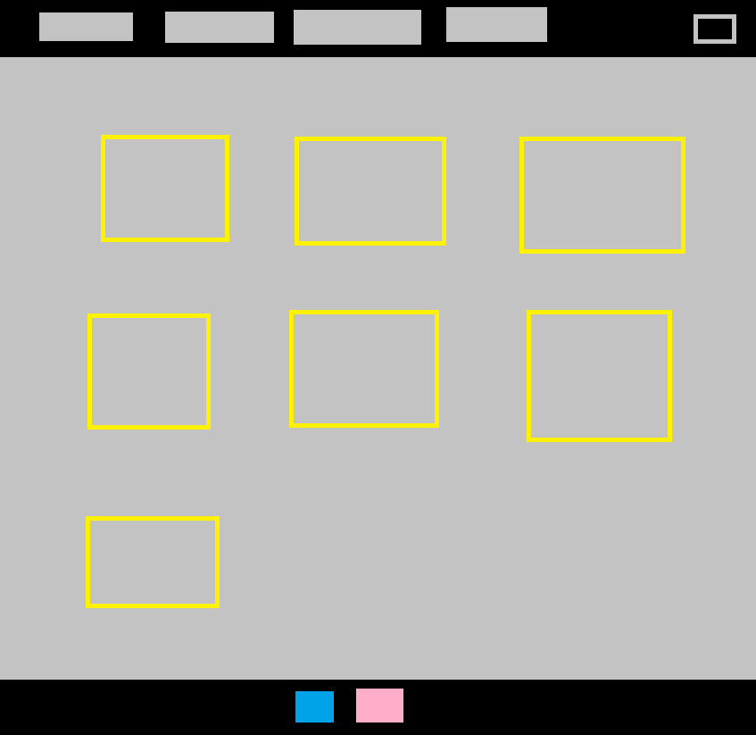
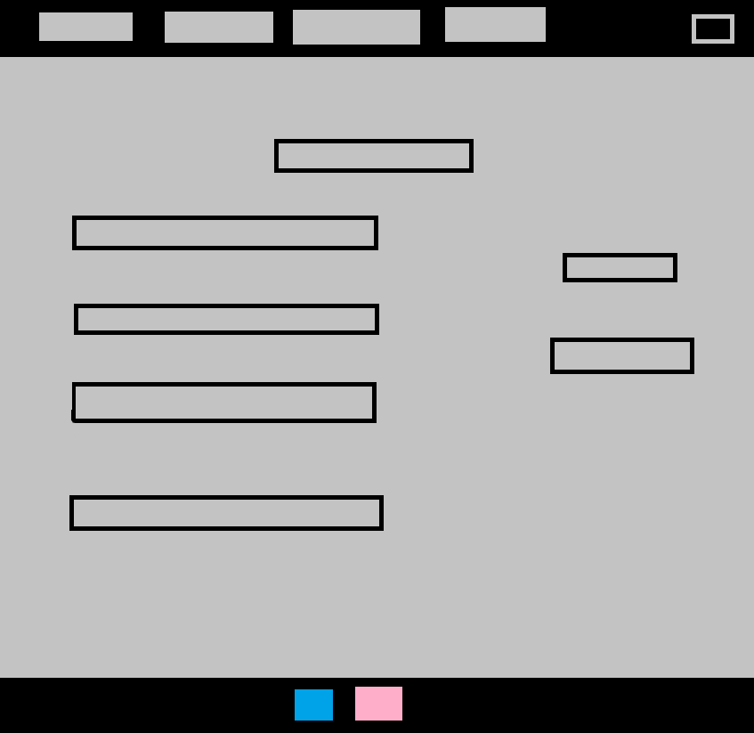

A weboldal terve:
A weboldal elkészítése során az édesanyámnak szerettem volna egy weboldalt készíteni a munkájához ami a hajhosszabbítás jelenleg.
A weboldal alap gondolata a következő volt:

Egy átlagos felül menüsor, baloldalt legördülő sávos kattintós csodát szerettem volna, alul pedig egy facebook és egy insta képet amire kattintva az adott oldalra visz.

Itt a második oldal azaz "munkáim" részleg tervei láthatóak ahol egy grides rendszerrel akartam megoldani, és ez sikerült is. Ráadás képp miközben csináltam jött az ihlet, hogy sárga árnyékot vessen ha ráviszem az egeret

A harmadik oldalon az árakat akartam megmutatni, ez látható a képen.
A tervtől csak annyiban tértem el, hogy szerettem volna az alap menüsávon túl egy legördülő menüt, amiben az oldalakat tudom váltani, de ez sajnos nem sikerült. Ezen felül még a színekkel voltam bajban.